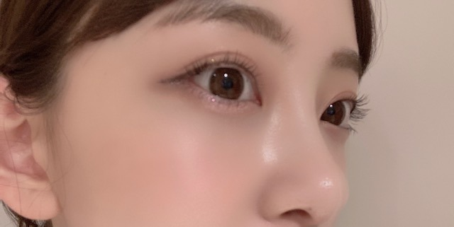

2020/0830Sunぐだぐだん
最近、室内空調の寒さにやられてしまうので
長袖をたまに着てます
暑がりやのにー！
秋冬が近づいてきたワクワク感を抑えきれず
散歩をしながら何回も母に秋の匂いがする！と
訴えてました
秋の匂いは、金木犀と炊き込みご飯と
栗とさつまいもと紅葉が混ざった匂いなんです
生まれ月がいちばんすき
みてー！
この日のまつげメイクがお気に入りで
写真撮ってみました！

目尻にかけてまつげを濃いめにしました
質問返し
この時期暑くて食欲無い時にサラッと食べれる
堀ちゃんおすすめメニューあれば教えて欲しいです！
...梅干しを使った料理はおすすめ！
あとは最近ゴーヤチャンプルーを作りました。
簡単で美味しかったです。
もずくも夏バテに良さそう！
男性の好きな髪型はなんですか？
...似合っていればなんでもいいと思いますが
最近はセンター分けいいなと思います
寝過ぎて頭が痛くなること、ありますか？
...おやすみの日はずーっと寝てるくらい
寝ることがすきなのでよくあります、、
ジブリ飯で特に食べたいのは何ですか？
...わー たくさんあるけど
アリエッティのたまご？パン
コクリコ坂からのお弁当
ハウルのベーコンエッグ
まだメンバーとあつ森の通信したりしますか？
...この間みなみと松村さんと話したんだけど
わたしが1番あつ森できてないです。笑
久しぶりにしよーかなー
未央奈ちゃんが何か物事を新しく始める時に大切にしてることは？
...楽しむこと
最近 何のゲームやってる？
今ハマってるマンガやアニメある？
...ゲームはswitchだとスマブラ
ps4だとホラーゲームとバイオ7を地道に進めてます
漫画は最近見れてないからみなさんおすすめの
キュンキュンほくほく少女漫画教えてください！！
アニメは、冴えカノ観てます
質問まだまだ受け付けますねー
2020/08/30 17:06
コメント(312)
可愛い…だいすき
こんばんみーお♪
ブログありがとう！
今、ジムあがりのメシッティーなうです。
なか卯で、チーズ親子丼とすだち、とり天冷やしうどん、
サラダ、鳥からを注文したけど、鶏肉だらけ〜笑
因みに、昼(朝)は、前日のもつ鍋のあまりと
もずく酢などだったよ〜
もずくは、小学生の頃から、灯油缶サイズで沖縄から
取り寄せていたよん☆(以前、話したかな？)
オムライス風に卵で包んだタコライスも
美味しいからお薦めだよ〜♪
そして、質問！って訳でもないけど、
お父さん、お母さんの誕生日に何か考えているかなぁ〜？
事後報告でいいので聞かせてね〜☆
因みに(2)、整理の為に伝えておくと、
みお推しが知っているのは、
お母さんとお姉さんの誕生日だよ〜
お父さんの誕生日は、まだ非公表だよん。
まぁ、いつまでも大事にしてあげてね。
親子の絆は永遠だからね☆
では、キタックするね。
今日の乃木のので、
れんたんがライブ神を好きだと言って流していたよ〜☆
あと、君花も流れたよ〜♪
あ〜ライブ行きたいし、握手したい〜！
いざ会っても、話下手だから
ろくな話をしないかもだけどね〜
でも、レーンに住み着くだけで良いとこあるからね〜笑
あらためて当たり前の事なんてないんやね〜
まぁ、前向きに待ちますわ〜☆
そういえば、部屋の整理をしていた時に
以前のAKB新聞に、ワタボコリトリオが出ている記事を
発掘したよ☆なんか、良かったよ〜しみじみ。
あ〜ライブ行きたい！！！！笑
あと、今日、テレビで渋谷の店を紹介していて、
ゴルゴンゾーラ入りの茶碗蒸しが出て来たよ〜
他にも、牛肉を巻いた上にウニが乗ったものなど、
みおが行きたそうな店だったよ〜
ハライチの澤部がmcのなりゆき街道旅
【矢田亜希子と生まれ変わった渋谷へ！】
的な内容だったよ。チェックしてみてね〜
ではは
わたる⊿
ブログありがとう！
今、ジムあがりのメシッティーなうです。
なか卯で、チーズ親子丼とすだち、とり天冷やしうどん、
サラダ、鳥からを注文したけど、鶏肉だらけ〜笑
因みに、昼(朝)は、前日のもつ鍋のあまりと
もずく酢などだったよ〜
もずくは、小学生の頃から、灯油缶サイズで沖縄から
取り寄せていたよん☆(以前、話したかな？)
オムライス風に卵で包んだタコライスも
美味しいからお薦めだよ〜♪
そして、質問！って訳でもないけど、
お父さん、お母さんの誕生日に何か考えているかなぁ〜？
事後報告でいいので聞かせてね〜☆
因みに(2)、整理の為に伝えておくと、
みお推しが知っているのは、
お母さんとお姉さんの誕生日だよ〜
お父さんの誕生日は、まだ非公表だよん。
まぁ、いつまでも大事にしてあげてね。
親子の絆は永遠だからね☆
では、キタックするね。
今日の乃木のので、
れんたんがライブ神を好きだと言って流していたよ〜☆
あと、君花も流れたよ〜♪
あ〜ライブ行きたいし、握手したい〜！
いざ会っても、話下手だから
ろくな話をしないかもだけどね〜
でも、レーンに住み着くだけで良いとこあるからね〜笑
あらためて当たり前の事なんてないんやね〜
まぁ、前向きに待ちますわ〜☆
そういえば、部屋の整理をしていた時に
以前のAKB新聞に、ワタボコリトリオが出ている記事を
発掘したよ☆なんか、良かったよ〜しみじみ。
あ〜ライブ行きたい！！！！笑
あと、今日、テレビで渋谷の店を紹介していて、
ゴルゴンゾーラ入りの茶碗蒸しが出て来たよ〜
他にも、牛肉を巻いた上にウニが乗ったものなど、
みおが行きたそうな店だったよ〜
ハライチの澤部がmcのなりゆき街道旅
【矢田亜希子と生まれ変わった渋谷へ！】
的な内容だったよ。チェックしてみてね〜
ではは
わたる⊿
ブログ更新有難うー！
私18:00頃コメント投稿したんだけど反映されてなかったﾋﾟｴﾝ
なのでもう一度書きます！
こういうThe・女の子っていう感じのブログは
女子からするとすごい嬉しい
女子力上がりそう…♥
質問
・自分に似合う、自分らしい色ってどう見つければいいと思う？
・明後日学校祭で、2日目に体育祭があるんだけど、
よかったら応援してください
恋愛系の質問
ずっと片想いしている同い年の男の子がいるんですけど、
その子とは中学になって学校が離れてしまいました(><)
今中3でやっとLINEのアカウントを友達から貰いました！
でも追加する勇気無いです…
なのでちょっとでもいいので
何がメッセージ欲しいです
未央奈ちゃんがジブリ好きということで、
私と同じですぅ
私はジブリ作品の中でもお気に入りの作品は、
借りぐらしのアリエッティとハウルの動く城です
ストーリーも人物像も好きです
"君は僕の心臓の一部だ"
このセリフ、未央奈ちゃんなら分かるカナ？
またブログ更新待ってます！
私18:00頃コメント投稿したんだけど反映されてなかったﾋﾟｴﾝ
なのでもう一度書きます！
こういうThe・女の子っていう感じのブログは
女子からするとすごい嬉しい
女子力上がりそう…♥
質問
・自分に似合う、自分らしい色ってどう見つければいいと思う？
・明後日学校祭で、2日目に体育祭があるんだけど、
よかったら応援してください
恋愛系の質問
ずっと片想いしている同い年の男の子がいるんですけど、
その子とは中学になって学校が離れてしまいました(><)
今中3でやっとLINEのアカウントを友達から貰いました！
でも追加する勇気無いです…
なのでちょっとでもいいので
何がメッセージ欲しいです
未央奈ちゃんがジブリ好きということで、
私と同じですぅ
私はジブリ作品の中でもお気に入りの作品は、
借りぐらしのアリエッティとハウルの動く城です
ストーリーも人物像も好きです
"君は僕の心臓の一部だ"
このセリフ、未央奈ちゃんなら分かるカナ？
またブログ更新待ってます！
未央奈ちゃん、こんばんは。
今日も写真たくさん載せてくれて、ありがとう。
未央奈ちゃんの瞳が好きです。
また、更新待ってます。
質問？好きな洋楽はありますか？
今日も写真たくさん載せてくれて、ありがとう。
未央奈ちゃんの瞳が好きです。
また、更新待ってます。
質問？好きな洋楽はありますか？
可愛いな！
まだまだ暑いよ〜
まだまだ暑いよ〜
ブログ更新ありがとうございます！
スマブラ僕もやります！僕は特にマリオ、パックンフラワー、勇者、バンジョー&カズーイ
などなど使っています！おそらくできないですがやってみたいです！
スマブラ僕もやります！僕は特にマリオ、パックンフラワー、勇者、バンジョー&カズーイ
などなど使っています！おそらくできないですがやってみたいです！
堀ちゃんブログ更新ありがと！
いっぱい更新してくれるからすごい嬉しいよ！
質問だけどいっぱいあるから答えてくれたら嬉しいです☆
・最近ハマってる漫画、アニメは？
・宝くじで5億円当たったら何欲しい？
・どんな願いでも叶えられるとしたら何を願う？
・今、1番行きたい所は？
このくらいにしておくね、、、
次のブログ更新も楽しみにしてるね！
いっぱい更新してくれるからすごい嬉しいよ！
質問だけどいっぱいあるから答えてくれたら嬉しいです☆
・最近ハマってる漫画、アニメは？
・宝くじで5億円当たったら何欲しい？
・どんな願いでも叶えられるとしたら何を願う？
・今、1番行きたい所は？
このくらいにしておくね、、、
次のブログ更新も楽しみにしてるね！
おつかれん
ヤッホー未央奈ブログ更新ありがとー❗今日も綺麗で可愛いいいいい～❗プティ君達元気にしていますか？又写真載っけてくれたら嬉しい です、、でわでわこのあたりで、体に気配りして健康で居ようねーおやすみなさい❗
いつもありがとう。
ライブでの堀さんの堂々とした佇まいが好きなのですが、好きなライブ会場とかありますか？
また訪れたい会場があれば教えてください。
ライブでの堀さんの堂々とした佇まいが好きなのですが、好きなライブ会場とかありますか？
また訪れたい会場があれば教えてください。
男だけど、女友達の影響でめっちゃ少女漫画読みます。
おすすめは、有名どころだと、君に届け,スイッチガール,アオハライド,蘭世も好きだった気がする狼少女と黒王子です。
最近は、須賀千夏さんの"彼氏さまにはあらがえない"と、優木なちさんの"僕の家においで"がお気に入りです
おすすめは、有名どころだと、君に届け,スイッチガール,アオハライド,蘭世も好きだった気がする狼少女と黒王子です。
最近は、須賀千夏さんの"彼氏さまにはあらがえない"と、優木なちさんの"僕の家においで"がお気に入りです
みおちゃんのサラサラストレートヘアに憧れてます♡
秘訣を教えてください！
秘訣を教えてください！
みおな、こんばんは！更新ありがとう。 近況報告ありがとうございます。 では、毎日みおなに良いこと沢山ありますように！ おやすみおな！！
ただいまダイエット中の女子です
おすすめのモチベの上げ方とかおすすめの食事とかありますか？
おすすめのモチベの上げ方とかおすすめの食事とかありますか？
すちやよ♥️
更新ありがとう❤
写真全部かわいい～
メガネかけてる写真かわいい～
僕は１月生まれなんですけど日にちが未央奈ちゃんと同じ日でちょっと嬉しいです。
質問
１月は好きですか？
写真全部かわいい～
メガネかけてる写真かわいい～
僕は１月生まれなんですけど日にちが未央奈ちゃんと同じ日でちょっと嬉しいです。
質問
１月は好きですか？
こんばんわん
ブログ更新ありがと！
久しぶりのコメントになっちゃったね
ごめんね
おすすめの漫画は、「思い、思われ、振り、振られ」だよ～
今度映画もやるよ
いつも私は、映画やドラマ化された漫画を読むんだけど、これは映画化される前に読めた本なの
読んだ時に、これ絶対映画化される！って思ったんだ～
そうしたら、本当に映画化された笑
ではまた(*´▽｀*)
ブログ更新ありがと！
久しぶりのコメントになっちゃったね
ごめんね
おすすめの漫画は、「思い、思われ、振り、振られ」だよ～
今度映画もやるよ
いつも私は、映画やドラマ化された漫画を読むんだけど、これは映画化される前に読めた本なの
読んだ時に、これ絶対映画化される！って思ったんだ～
そうしたら、本当に映画化された笑
ではまた(*´▽｀*)
こーんばんは！ブログありがとう！(^-^)v
久々のメガネ未央奈だ！ショートヘアverも可愛いっ。
室内空調すごい強いとことかあるもんねー。
俺はスーパーの冷房が苦手。買い物でいろいろ選んでるのに風邪引きそうになるわっ！てお店がたまにあるんよw(；・∀・)
荷物にはなっちゃうけどちょっとした上着とかあると安心だよね。
もう9月になるもんねー、秋は確実にもうすぐだよね。
でも、ママさんに何回も訴えちゃう未央奈可愛すぎw
とりあえずもう少し我慢だよーって石焼き芋ごちそうしてあげたい。
うんー！そのまつげメイクの未央奈めっちゃ好き！
目尻濃いめ似合うね、やっぱ猫目タイプだよね☆
髪型、メイク、くすみブルーの服。
スリーピースですね！この写真良いなぁ。保存させていただきましたm(。_。)m
質問～。子供のころ好きだった駄菓子は何ですか？
ちなみに俺はポテトスナックのステーキ味です。
久々のメガネ未央奈だ！ショートヘアverも可愛いっ。
室内空調すごい強いとことかあるもんねー。
俺はスーパーの冷房が苦手。買い物でいろいろ選んでるのに風邪引きそうになるわっ！てお店がたまにあるんよw(；・∀・)
荷物にはなっちゃうけどちょっとした上着とかあると安心だよね。
もう9月になるもんねー、秋は確実にもうすぐだよね。
でも、ママさんに何回も訴えちゃう未央奈可愛すぎw
とりあえずもう少し我慢だよーって石焼き芋ごちそうしてあげたい。
うんー！そのまつげメイクの未央奈めっちゃ好き！
目尻濃いめ似合うね、やっぱ猫目タイプだよね☆
髪型、メイク、くすみブルーの服。
スリーピースですね！この写真良いなぁ。保存させていただきましたm(。_。)m
質問～。子供のころ好きだった駄菓子は何ですか？
ちなみに俺はポテトスナックのステーキ味です。
お疲れ様です!
まつげ良い感じだね。 でもそれ以上にお肌キレイ過ぎて驚きです。こんなに透き通るようなツヤツヤな人は見たことありません！もはや宇宙感です。
ブログ更新ありがと‼︎
写真ありがと‼︎♡
めちゃめちゃかわいい♡
昨日ね、アリエッティ見たんだ‼︎
未央奈ちゃんもみたかな？
今ね、テレビ逃走中見てるんだー
昨日未央奈ちゃんが出た時の逃走中見たよ‼︎
結構最後の方で捕まっちゃったの惜しかったね…
捕まった時の顔がめっちゃかわいかった！！♡
また出て欲しいなぁ…♡
写真ありがと‼︎♡
めちゃめちゃかわいい♡
昨日ね、アリエッティ見たんだ‼︎
未央奈ちゃんもみたかな？
今ね、テレビ逃走中見てるんだー
昨日未央奈ちゃんが出た時の逃走中見たよ‼︎
結構最後の方で捕まっちゃったの惜しかったね…
捕まった時の顔がめっちゃかわいかった！！♡
また出て欲しいなぁ…♡
目的が変わっちゃってますね(笑)
訴える。
･･･あれ？あれ？
食べ物･･･あ～食欲の～～
みたー
褒め方わからないけど
訴える。
･･･あれ？あれ？
食べ物･･･あ～食欲の～～
みたー
褒め方わからないけど
堀さん、こんばんは。
「室内」という単語を見ると、反射的に「室内楽」を思い浮かべてしまいます。弦楽四重奏とか聴きたいな。芸術の秋はもうすぐそこまで来ています。
秋の匂いといえば、僕も真っ先に思い出すのが金木犀の香り。玄関でるとすぐ前に金木犀が植わっているので、朝家を出るとき甘い香りがすると「ああもう秋だなあ」と感じます。
明日で八月もおしまいですね。九月になったら少しは今の暑さもやわらいでくれるかな。早く冷房対策でなく長袖の服を着られる気候になってくれることを願う、そんな夏の終わりです。
ではまたコメントしますね。おやすみなさい。
さらばだ、また会おう！（気球に乗って去りぬ〜）
「室内」という単語を見ると、反射的に「室内楽」を思い浮かべてしまいます。弦楽四重奏とか聴きたいな。芸術の秋はもうすぐそこまで来ています。
秋の匂いといえば、僕も真っ先に思い出すのが金木犀の香り。玄関でるとすぐ前に金木犀が植わっているので、朝家を出るとき甘い香りがすると「ああもう秋だなあ」と感じます。
明日で八月もおしまいですね。九月になったら少しは今の暑さもやわらいでくれるかな。早く冷房対策でなく長袖の服を着られる気候になってくれることを願う、そんな夏の終わりです。
ではまたコメントしますね。おやすみなさい。
さらばだ、また会おう！（気球に乗って去りぬ〜）
ブログ更新ありがとう！まだまだ暑いけど、お互い体調に気を付けて頑張ろう！！次も絶対見るからね！
みおな♪(*´ω｀*)の顔が小さい‼️眼鏡 がデカイ？( ・◇・)？
マリカー練習してでんちゃんと対決して欲しい！
好きが止まりません。どうしたらいいですか！
未央奈ちゃんいつもブログありがとう！
本当に可愛い未央奈ちゃん大好き
今日、らじらーサンデーで未央奈ちゃんの話題が出てたよ！
らじらーに未央奈ちゃんが出演してくれたら嬉しい
ということで、質問はらじらー聴いてますか？
少しだけ涼しくなってきたので、エアコンの温度気を付けてね。
大好きです
本当に可愛い未央奈ちゃん大好き
今日、らじらーサンデーで未央奈ちゃんの話題が出てたよ！
らじらーに未央奈ちゃんが出演してくれたら嬉しい
ということで、質問はらじらー聴いてますか？
少しだけ涼しくなってきたので、エアコンの温度気を付けてね。
大好きです
アイシャドウやマスカラ何使ってますか？
髪の毛染めてたら色教えて下さい！
髪の毛染めてたら色教えて下さい！
こんにちは‼︎
ブログ更新、ありがとうございます♪
なんと、連日の猛暑の中、長袖を着る時があるんですね…‼︎
自分も空調はあまり得意ではないけれど、長袖を着るって発想はなかったなあ。
半袖短パンでも暑いって感じることの方が多いので(苦笑)。
でも、お店には早くも秋冬物が並んでますね‼︎
8月も残りあと少し。
日が暮れるのも少しずつ早くなって、ちょっとずつ夏が終わっていくのを感じますね♪
自分が夏の終わり、秋の始まりを感じるのは、空の高さかなあ。
空の色が少し和らいで、鱗雲が空に浮かんで、空が高く見える。
そうすると、秋がやってきたなあって感じます♪
未央奈か着ている、くすみブルーのトップス。
ちょうど秋の空のようで、とっても綺麗です‼︎
黒髪ボブのゆるふわアレンジもいい感じ♪
ちょっとしたアレンジで、新鮮味が増しますね…‼︎
そして、まつげアレンジ‼︎
いつもよりも、目元が柔らかい印象になりますね♪
ゆるふわの髪型とうまくマッチしてます。
いい感じいい感じ♪
さて、気がつけば2020年もあと4ヶ月ちょっと。
いろいろと忘れられない1年になりそうですが、その中でも悔いが残らないよう、頑張っていきましょう‼︎
ではでは、また。
明日も未央奈にとっていい1日になりますように♪
ブログ更新、ありがとうございます♪
なんと、連日の猛暑の中、長袖を着る時があるんですね…‼︎
自分も空調はあまり得意ではないけれど、長袖を着るって発想はなかったなあ。
半袖短パンでも暑いって感じることの方が多いので(苦笑)。
でも、お店には早くも秋冬物が並んでますね‼︎
8月も残りあと少し。
日が暮れるのも少しずつ早くなって、ちょっとずつ夏が終わっていくのを感じますね♪
自分が夏の終わり、秋の始まりを感じるのは、空の高さかなあ。
空の色が少し和らいで、鱗雲が空に浮かんで、空が高く見える。
そうすると、秋がやってきたなあって感じます♪
未央奈か着ている、くすみブルーのトップス。
ちょうど秋の空のようで、とっても綺麗です‼︎
黒髪ボブのゆるふわアレンジもいい感じ♪
ちょっとしたアレンジで、新鮮味が増しますね…‼︎
そして、まつげアレンジ‼︎
いつもよりも、目元が柔らかい印象になりますね♪
ゆるふわの髪型とうまくマッチしてます。
いい感じいい感じ♪
さて、気がつけば2020年もあと4ヶ月ちょっと。
いろいろと忘れられない1年になりそうですが、その中でも悔いが残らないよう、頑張っていきましょう‼︎
ではでは、また。
明日も未央奈にとっていい1日になりますように♪
メガネかけても可愛いのね❤️
ブログ更新してくれてありがとう♡
みおなちゃんのまつげメイクめちゃめちゃ綺麗！
それに合わせた質問です！
今のまつげメイクのこだわりってありますか？
あとマスクをずっとつけてるから、どうしてもまつげが下がっちゃうのに悩んでるんですけど、みおなちゃんはそれについて何か工夫してますか？
よかったら教えてください♪
みおなちゃんのまつげメイクめちゃめちゃ綺麗！
それに合わせた質問です！
今のまつげメイクのこだわりってありますか？
あとマスクをずっとつけてるから、どうしてもまつげが下がっちゃうのに悩んでるんですけど、みおなちゃんはそれについて何か工夫してますか？
よかったら教えてください♪
いつもありがとうございます
ブログ更新ありがとう！
質問返しもありがとう！！
今日も可愛いですよ！
質問返しもありがとう！！
今日も可愛いですよ！
未央奈さん、こんばんは
自分はエアコンつけて寝る時の
設定温度に悩んでいます
28度に設定してるのですが
寒くて目が覚めたり
喉がカラカラになって
起きてしまったりと。。。
丁度良い温度をみつけるのって
意外と難しいなぁ
そのうち秋になってしまう笑
まつげメイク綺麗ですね
上手ですよ～(^_^)
いつも写真ありがとう
今日のポーズは何の合図かな～
それともサインかな～
自分勝手な妄想をして
楽しんで見ていますf(^_^)
残暑厳しいですが
体調くずさないようにね(^_^)
自分はエアコンつけて寝る時の
設定温度に悩んでいます
28度に設定してるのですが
寒くて目が覚めたり
喉がカラカラになって
起きてしまったりと。。。
丁度良い温度をみつけるのって
意外と難しいなぁ
そのうち秋になってしまう笑
まつげメイク綺麗ですね
上手ですよ～(^_^)
いつも写真ありがとう
今日のポーズは何の合図かな～
それともサインかな～
自分勝手な妄想をして
楽しんで見ていますf(^_^)
残暑厳しいですが
体調くずさないようにね(^_^)
好き。
未央奈ちゃん今日もブログ更新ありがとー
質問‼️
未央奈ちゃんが秋に着たいと思っている洋服の色とかあれば教えてください‼️
私トレンドに本当に乗れなくて…
未央奈ちゃんの私服はどれもオシャレで憧れます‼️
未央奈ちゃんの生まれ月ってことは10月だよね‼️
何度も言ってるけど私未央奈ちゃんと誕生日が一緒です‼️
ちゃんと日にちまで一緒ですよ‼️
私、暑すぎるのと寒すぎるの両方嫌なんで春と秋が好きです‼️
春はお花が綺麗でお祝いごとのイメージがあるし秋は紅葉とか綺麗だし食べ物も美味しいよね‼️
毎日ブログを見るごとに可愛くなっていって素敵です‼️
一生付いていきます‼️
これからもファイティン‼️
質問‼️
未央奈ちゃんが秋に着たいと思っている洋服の色とかあれば教えてください‼️
私トレンドに本当に乗れなくて…
未央奈ちゃんの私服はどれもオシャレで憧れます‼️
未央奈ちゃんの生まれ月ってことは10月だよね‼️
何度も言ってるけど私未央奈ちゃんと誕生日が一緒です‼️
ちゃんと日にちまで一緒ですよ‼️
私、暑すぎるのと寒すぎるの両方嫌なんで春と秋が好きです‼️
春はお花が綺麗でお祝いごとのイメージがあるし秋は紅葉とか綺麗だし食べ物も美味しいよね‼️
毎日ブログを見るごとに可愛くなっていって素敵です‼️
一生付いていきます‼️
これからもファイティン‼️
またコメント致します。
>最近、室内空調の寒さにやられてしまうので
…おや？未央奈さんもですか？
私、今もそうなのですが、
クーラー、つけると寒くて、消すと暑く、
困っております。
「暑さ寒さも彼岸まで」と言いますが、
あと３週間近く、こんな感じなのでしょうか？
>最近、室内空調の寒さにやられてしまうので
…おや？未央奈さんもですか？
私、今もそうなのですが、
クーラー、つけると寒くて、消すと暑く、
困っております。
「暑さ寒さも彼岸まで」と言いますが、
あと３週間近く、こんな感じなのでしょうか？
メガネ姿かわいい
すごく似合ってます
ジブリ飯のベーコンエッグいいですよね
すごく似合ってます
ジブリ飯のベーコンエッグいいですよね
堀ちゃん！更新ありがとう！！
外出ると暑いけど
中入ると室内冷房きついから
自分も長袖シャツ気がちですね〜笑
まつげいいね！！
しっかり上がってて綺麗！
ショートの堀ちゃんやっぱし
髪型なんでも似合うね！！
最高なショットです！
堀ちゃんに質問！
○堀ちゃんが今年1番
夏を感じた瞬間はなんですか？
教えてください！！
お返事待ってます！
次回の更新も楽しみに待ってますね！
では！
体調1番で！！
おやすみおな〜！！
外出ると暑いけど
中入ると室内冷房きついから
自分も長袖シャツ気がちですね〜笑
まつげいいね！！
しっかり上がってて綺麗！
ショートの堀ちゃんやっぱし
髪型なんでも似合うね！！
最高なショットです！
堀ちゃんに質問！
○堀ちゃんが今年1番
夏を感じた瞬間はなんですか？
教えてください！！
お返事待ってます！
次回の更新も楽しみに待ってますね！
では！
体調1番で！！
おやすみおな〜！！
体型維持で意識していることはありますか？ ❤︎
岐阜の大学に進学するんですけど岐阜のおすすめスポット教えてください
眼鏡未央奈さんめちゃくちゃ好きです。
青い服めちゃかわいいね！
もちろん未央奈も！！笑
金木犀の匂い、俺も大好きです～
～質問～
海と川どっちが好きですか？
キャンプは好きですか？？
もちろん未央奈も！！笑
金木犀の匂い、俺も大好きです～
～質問～
海と川どっちが好きですか？
キャンプは好きですか？？
ブログ更新ありがとー！
日曜日の更新って珍しいですね
switch持ってるんですね！面白そうなゲーム沢山ありますよね！いいなぁー僕もswitch買えそうになったら買ってみようと思います。
バイオハザード7もいいですよね！
実はやってみたいゲームの１つなんです！
#未央奈に質問
・秋冬のおすすめの料理はなんですか？また作りたい料理は？
・秋冬ファッションで男性に着てほしいコーデはなんですか？
・今、メンバーとやりたいことは何ですか？
・先週の乃木中で後輩に呼んでほしいあだ名なんですが、未央奈ちゃんは何て呼ばれたいですか？(僕は未央奈ちゃんと呼んでます。勝手にですが…)
写真可愛いです！更新待ってます！
乃木中見て寝ます！
日曜日の更新って珍しいですね
switch持ってるんですね！面白そうなゲーム沢山ありますよね！いいなぁー僕もswitch買えそうになったら買ってみようと思います。
バイオハザード7もいいですよね！
実はやってみたいゲームの１つなんです！
#未央奈に質問
・秋冬のおすすめの料理はなんですか？また作りたい料理は？
・秋冬ファッションで男性に着てほしいコーデはなんですか？
・今、メンバーとやりたいことは何ですか？
・先週の乃木中で後輩に呼んでほしいあだ名なんですが、未央奈ちゃんは何て呼ばれたいですか？(僕は未央奈ちゃんと呼んでます。勝手にですが…)
写真可愛いです！更新待ってます！
乃木中見て寝ます！
ブログ更新ありがとうございますm(._.)m
これからも頑張ってください！
質問です
ジブリ作品の中で、これは見ておいた方がいいと思うものはありますか？
質問にお答えしていただけると嬉しいです
これからも頑張ってください！
質問です
ジブリ作品の中で、これは見ておいた方がいいと思うものはありますか？
質問にお答えしていただけると嬉しいです
未央奈～ こんにちは
ブログ更新ありがとうございます。
８月もまもなく終わり、９月と言うのに、なかなか涼しくなりませんね。今日も大垣では３８℃を超え、残暑は厳しいようです。
でも、秋めいてきたのは確かです。我が家では稲刈りも終わり、「収穫の秋」を迎えました。新米ももうすぐですよ。栗ご飯か？ いいですね。
メガネ姿の未央奈もいいけど、この写真は初めてかな？
そういえば、今日のらじらーで話題になっていました。「早く来てほしい」って‥‥。
ブログ更新ありがとうございます。
８月もまもなく終わり、９月と言うのに、なかなか涼しくなりませんね。今日も大垣では３８℃を超え、残暑は厳しいようです。
でも、秋めいてきたのは確かです。我が家では稲刈りも終わり、「収穫の秋」を迎えました。新米ももうすぐですよ。栗ご飯か？ いいですね。
メガネ姿の未央奈もいいけど、この写真は初めてかな？
そういえば、今日のらじらーで話題になっていました。「早く来てほしい」って‥‥。
ヤッホー未央奈ブログ更新ありがとー❗今日の写真も全部綺麗でした❗プティ君達元気にしてますかー、、また写真載っけてくれたら嬉しいです、、でわでわ体に気配りして健康でいてください❗おやすみなさい❗
ブログの髪型超好み☆彡
メガネカワエエヱ！！！！！！！！！！！！！！！！！！！！！！！


炎天下の中での仕事
家に帰れば
エアコンでキンキンに冷やして
クールダウン(-ε- )
体がダルダルです
こんばんは
日曜日の堀ちゃんのブログ更新
珍しい
でも、嬉しい更新ありがとう
みお造は9月うまれなので
夏から秋に移り行く時期が好き
でも秋は短いんだよな
じゃあね、またね